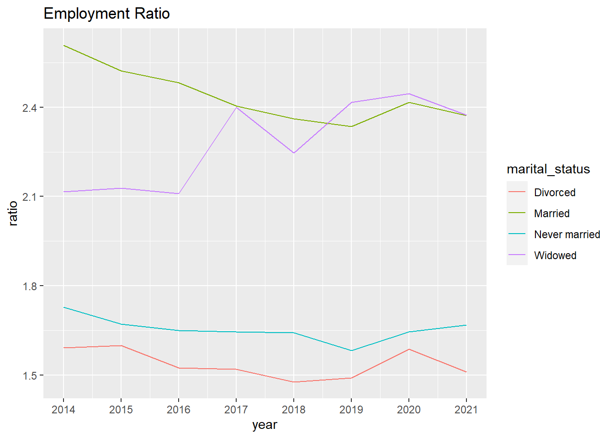
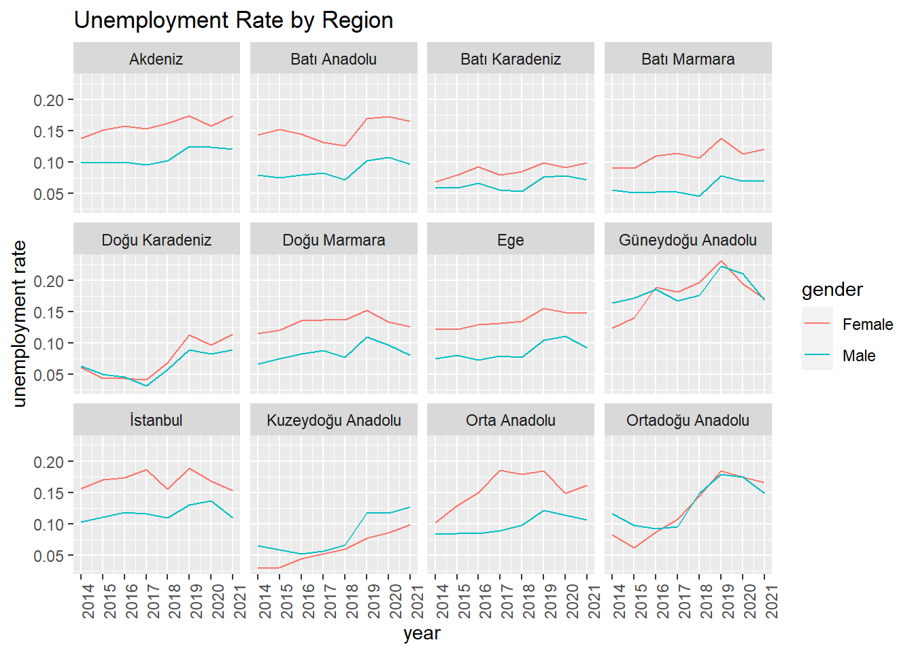
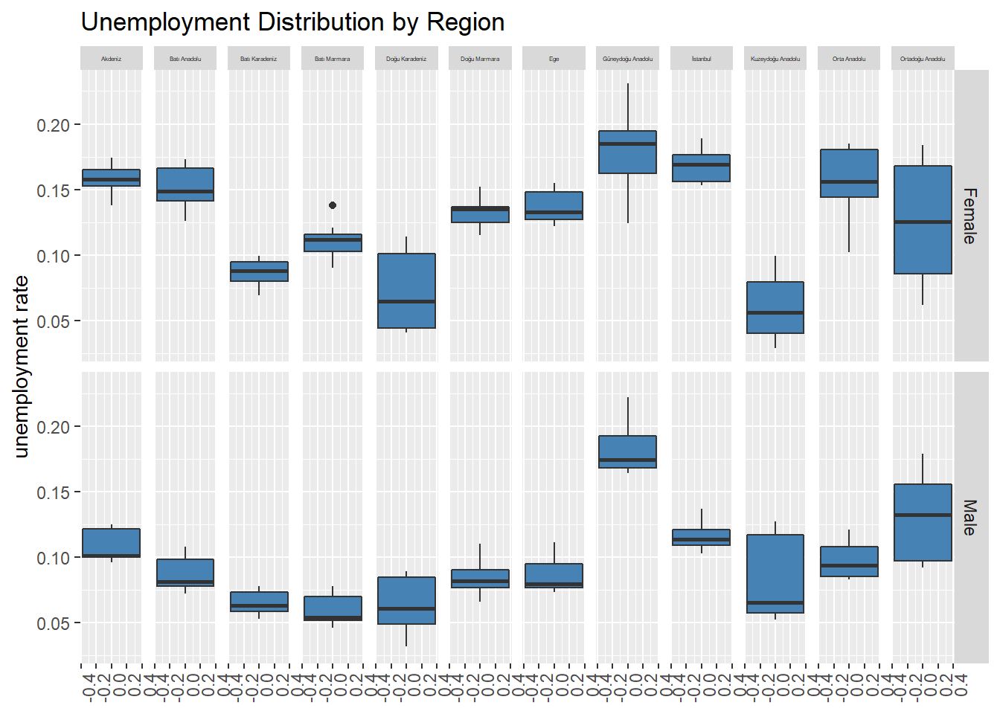
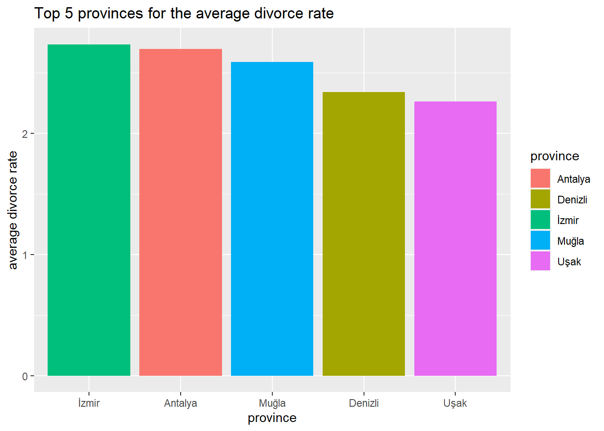
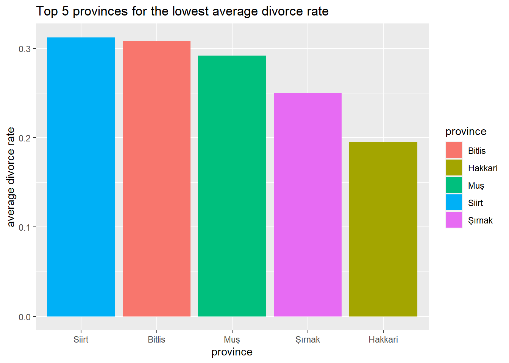

Discussion about Women Participation in Turkish Labour Force
The Civil Code of 1926 gave wider rights to Turkish women in family and social life than in western countries.
The Civil Code abolished the regulations on the man’s right to polygamy and unilateral divorce, and gave women the right to divorce, custody and dispose of their property. Thus, women gained an equal status with men in family and social life.
However, when it comes to nowadays, we see that the dominance of men in labor force. Considering the data provided by TUIK, we can observe several cases.
Key Takeaways
Men are two times more than women in labour market. This ratio does not change much even though more women participate in labour force over years.
Labour Force and Employement Ratios has a decreasing trend until COVID. However, pandemics is big game changer. It has a negative effect on labour force figures. So, trend of ratios increased in 2020. 2021 is a recovery year for employment figures after pandemics.
Marital status is a game changer in labour force especially for women. Labour force participation increases much more for divorced women compared to divorced men. Women need to work to manage her life after divorce. Thanks to economic freedom, women are no longer trapped in unhappy marriages.
Reasons of not being a part of labour force indicates a stereotypical structure for gender roles in Turkey. Taking care of home is accepted as women’s job whereas men are bread-winners in this scenario. Therefore, being housewife prevent women participating in labour workforce. Retirement and Education are the most voted reason for men. Men’s reasons are arbitrary. However, women has no other choice other than taking care of home.
Seaside provinces have a higher divorce rate than Eastern Regions.
Introduction
In this project, Population & Demographics domain in TUIK Dataset will be studied. Main focus of analysis is to explore why females are hired less with respect to males. It is quite hard to solve this issue in a sudden. Since, its roots go very deeply. However, we hope to create an awareness through this project.
Labour Force Participation & Employment Rate by Gender
When we look at the change in rate of women participation rate in labour force, we cannot observe a significant change. Average increase in growth in women labor participation is almost as same as growth in men participation.
Labour Force Participation Ratio vs. Employment Ratio
Labour force participation and employment rates for men are two times more than women. So, we divide men’s figures by women and observe these ratios on an annual trend graph. Women labour force increases by years. Therefore, ratios decrease until 2019. However, ratios began to increase in 2020 since labour force decreased especially for men due to COVID. Ratios keep decreasing after COVID. So, it shows that employment figures catch up with prior trend before 2020.
Being divorce is an important factor for women that increases employment rate dramatically. Economic freedom of women makes divorcement much more easier compared to prior years. Employed women have more power to abandon unhappy marriages. This graph also emphasizes on the stereotypical gender roles in Turkey. Being divorced almost has no effect on labour force of men whereas women experience a life changing event.
We observed that women labor participation rate is not increasing. Then, we observed that women has more variability in unemployment compared to men unemployment. This case is also not good for women situation in Turkey.
Following diagram is formed by dividing men employment rate to women employment rate. It is acceptable that the ratio will be positive and above 1. Men are more employed than women are. However, it is interesting that when someone is married or widowed, the gender plays an important role. Vice versa, when someone is never married or divorced, the gender does not play an important role as it plays in the other scenario.
Code
female<-employed_rate_by_marital_status%>%filter(gender=="Female")male<-employed_rate_by_marital_status%>%filter(gender=="Male")diff<-female%>%mutate(ratio=male$employed_rate/female$employed_rate) %>%select(-gender)ggplot(diff, aes(x = year, y = ratio, color = marital_status)) +geom_line() +scale_x_continuous(breaks =c(min(female$year):max(female$year))) +labs(title ="Employment Ratio")

We think this situation is caused from having a child in the family. Either you are divorced or married; you have a high probability that you have a child. When a woman have a child, most probably, she will leave employment status.
Variability in Women Unemployment by Region
Unfortunately, we have another issue in addition to participation rate. When we observe the employment rate, we can see that variability in women unemployment rate. In the following diagram, red lines that represent women have higher variability in slopes of the lines. Red lines look like saw tooth but blue lines representing men are more in a straight-line form. (Except Kuzeydoğu Anadolu).
Code
labour_force_status_by_reg %>%filter(region !="Total") %>%ggplot() +geom_line(aes(x = year, y = unemployment_rate, color = gender)) +facet_wrap( ~ region) +scale_x_continuous(breaks =c(min(labour_force_status_by_reg$year):max(labour_force_status_by_reg$year))) +theme(axis.text.x =element_text(angle=90,vjust=1,hjust=1)) +labs(title ="Unemployment Rate by Region") +ylab("unemployment rate")

We can this situation in another representation. In the following graph, we see that boxes for women unemployment rate has a longer height compared to boxes representing men unemployment rate.
The exception of Kuzeydoğu Anadolu is also valid because the following graph is also derived from the same data. Except Kuzeydoğu Anadolu, variability of women unemployment rate is higher; represented by more longer/stretched boxes.
Code
labour_force_status_by_reg %>%filter(region !="Total") %>%ggplot(aes(y=unemployment_rate, group = gender)) +geom_boxplot(fill="steelblue") +facet_grid(gender ~ region) +theme(axis.text.x =element_text(angle=90,vjust=1,hjust=1)) +theme(strip.text.x =element_text(size =3)) +labs(title ="Unemployment Distribution by Region") +ylab("unemployment rate")

Reasons of not Being in Labour Force
When we analyze the reasons of not being in labour force for both genders, we see that the biggest reason for women is undertaking the housework. In fact, we see that this ratio for housework for men is “0”. (We can think that the biggest reason for this is the policies implemented by the state and cultural factors.)
Also, we can see that retirement is an important reason for men. this may indicate that employers do not prefer to employ retired men, or that retired men no longer prefer to work.
Also, if we look at the effects of divorces on women’s employment in 2012-2021, we see that the most divorces in women are in the Aegean region, and the least in the Southeastern Anatolia region.
It seems that the employment rate difference of women and men, is similar to the divorce rate in these regions.
In other words, we can think that divorce in women increases labor force participation. We can also say that women have to work after divorce.
Code
plot_data1<-crude_divorce_rate_by_provinces %>%group_by(province) %>%summarise(avg_rate =mean(crude_divorce_rate))%>%arrange(desc(avg_rate)) %>%top_n(5)ggplot(plot_data1,aes(x=reorder(province, -avg_rate), y=avg_rate, fill= province)) +geom_bar(stat ="identity") +labs(title ="Top 5 provinces for the average divorce rate") +xlab("province") +ylab("average divorce rate")

Code
plot_data2<-crude_divorce_rate_by_provinces %>%group_by(province) %>%summarise(avg_rate =mean(crude_divorce_rate))%>%arrange(avg_rate) %>%slice(1:5) ggplot(plot_data2,aes(x=reorder(province, -avg_rate), y=avg_rate, fill=province)) +geom_bar(stat ="identity") +labs(title ="Top 5 provinces for the lowest average divorce rate") +xlab("province") +ylab("average divorce rate")

Conclusion
According to analysis below, the roots of employment go deep to how Turkish society understands family and is also a political issue. Therefore, it is not easy to close the gap.
In order not to reinforce stereotype that housework is only women’s job:
The perception against jobs classified by gender should be changed. There is no such thing like women’s or men’s job.
Women should be more in positions of power to change the culture radically.
Position of gender monitor should be established to make sure public programs are aligned with country’s goals of gender equality.
Maternity leave should be extended to paternity leave so men should take active role in childcare and be equal with women when they have a child.
Government should provide affordable or free childcare centers so parents could leave their children comfortably when they go to work.
We hope that people who read this report will have an awareness about the subject. We can take small steps by making research on how employment policies against women are conducted in our business environment.
“This is one small step for a man, one giant leap for mankind.” Neil Armstrong